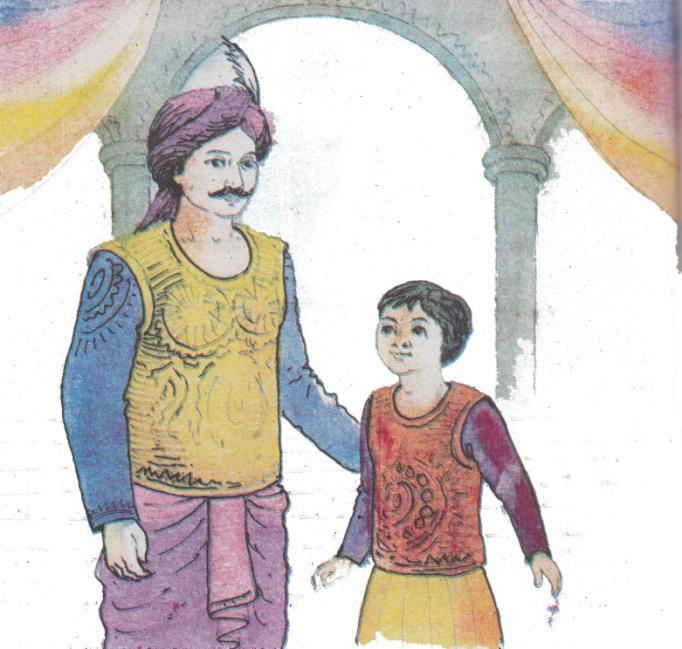
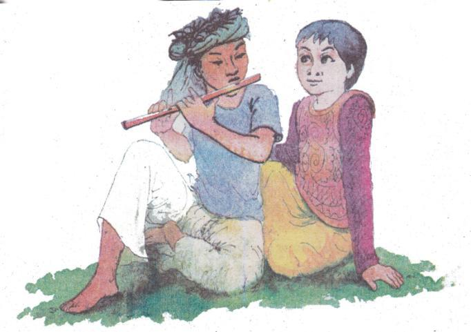
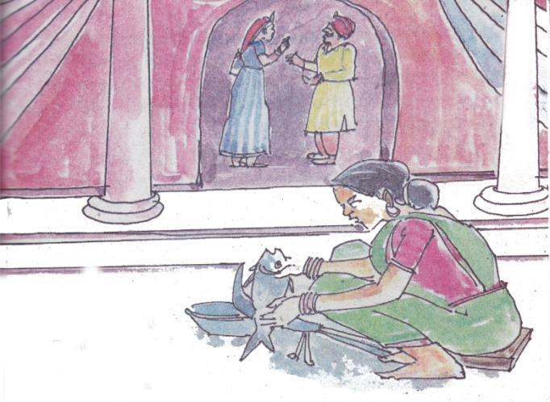
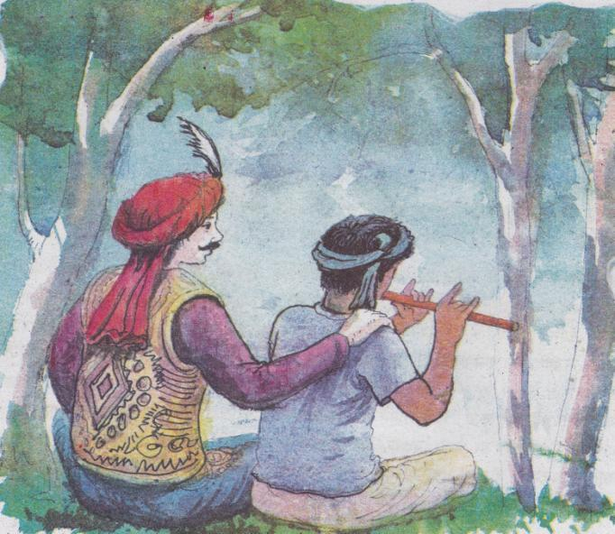

কাঞ্চনমালা আর কাঁকনমালা
অনেক দিন আগের কথা। এক দেশে ছিল এক রাজা। রাজার একটাই পুত্র। রাজপুত্রের সঙ্গে সেই রাজ্যের রাখাল ছেলের খুব ভাব। দুই বন্ধু পরস্পরকে খুব ভালোবাসে। রাখাল মাঠে গরু চরায়, রাজপুত্র গাছতলায় বসে তার জন্য অপেক্ষা করে। নিঝুম দুপুরে রাখাল বাঁশি বাজায়। রাজপুত্র তার বন্ধু রাখালের গলা জড়িয়ে বসে সেই সুর শোনে। বন্ধুর জন্য বাঁশি বাজিয়ে রাখাল বড় সুখ পায়। আর, তা শুনে রাজপুত্রের মন খুশিতে ঝলমলিয়ে ওঠে। রাজপুত্র বন্ধুর কাছে প্রতিজ্ঞা করে, বড় হয়ে রাজা হলে রাখালকে তার মন্ত্রী বানাবে।

তারপর একদিন রাজপুত্র রাজা হয়। লোকলস্কর, সৈন্যসামন্তে গমগম করে তার রাজপুরী। রাজপুরী আলো করে থাকে রানি কাঞ্চনমালা। চারিদিকে সুখ। এত সুখের মধ্যে রাখালবন্ধুর কথা মনে পড়ে না। রাজপুত্র বন্ধুকে ভুলে যায়।
এদিকে, রাখালবন্ধুর কিন্তু খুব মনে পড়ে বন্ধু রাজপুত্রের কথা। শেষে সে একদিন চলেই আসে বন্ধুকে একটুখানি দেখার জন্য। কিন্তু রাজপ্রসাদের রক্ষীরা অমন গরিব রাখালকে ভেতরে ঢুকতে দেয় না। মনভরা কষ্ট নিয়ে সারাদিন প্রাসাদের দরজার সামনে দাঁড়িয়ে থাকে সে। রাজার দেখা মেলে না। দিনশেষে মনের কষ্ট নিয়ে দুঃখী রাখাল চলে যায়, কেউ তা জানে না।
এক রাতে রাজা ঘুমাতে যান। কিন্তু ভোর বেলা যখন তার ঘুম ভাঙে, তখনই দেখা যায় কী সর্বনাশ ঘটেছে! রাজা দেখে যে তার শরীরে গেঁথে আছে অগুনতি সুচ। রাজা কথা বলতে পারেন না, শুতে পারেন না, খেতেও পারেন না। রাজ্যজুড়ে কান্নাকাটির রোল পড়ে যায়। রাজা বোঝেন – প্রতিজ্ঞা ভঙ্গের সেই অপরাধেই আজকে তার এই দশা। রানি কাঞ্চনমালা চোখের জল মুছতে মুছতে রাজ্য দেখাশোনা শুরু করেন।
কাঞ্চনমালা একদিন নদীর ঘাটে স্নান করতে যান। কোথা থেকে জানি একটি মেয়ে এলো। এসে তাকে বলে, রানির যদি দাসীর দরকার হয়, তো সে দাসী হবে। রাজার শরীর থেকে সুচ খোলার জন্য একজনের দরকার ছিল রানি কাঞ্চনমালার। মেয়েটাকে সেই কাজের জন্য নিয়ে নেন রানি। নদীর ঘাটে গেছেন রানি, সঙ্গে তার কী করে থাকে টাকাকড়ি! তখন হাতের সোনার কাঁকন দিয়েই রানিকে কিনতে হয় ওই দাসী। তাই তার নাম কাঁকনমালা।
গায়ের গয়নাগুলো কাঁকনমালার কাছে রেখে নদীতে ডুব দিতে যান রানি। চোখের পলকে কাঁকনমালা রানির সব গয়না আর শাড়িটা পরে নেয়। রানি ডুব দিয়ে উঠে দেখেন দাসী হয়ে গেছে রানি, আর রানি কাঞ্চনমালা হয়ে গেছেন দাসী।
নকল রানি কাঁকনমালার ভয়ে কাঁপতে থাকে কাঞ্চনমালা। কাঁপতে থাকে রাজপুরীর সকলে। সকলে ভাবতে থাকে, তাদের রানি তো আগে এমন ছিল না।
সুচবেঁধা রাজা জানতেই পারেন না, তার রাজ্যে আরেক কী ঘোর ঝামেলা এসে গেছে। দুখিনী কাঞ্চনমালা রাজবাড়ির সকল কাজকর্ম করেন। চোখের জল ফেলেন।
৫৮
হাতে কাঞ্চনমালার একটুও ফুরসত থাকে না। কীভাবে সুচরাজার যত্ন করবে! কীভাবে তার পাশে দু-দণ্ড বসবে! নকল রানি রাজার দিকে ফিরেও তাকায় না। রাজার কষ্টের সীমা থাকে না। সুচবেঁধা শরীর ব্যথায় টনটন করে, চিনচিন করে জ্বলতে থাকে। গায়ে মাছি এসে বসে ঝাঁকে ঝাঁকে। কে তাকে বাতাস করে, কে তাকে দেখে!
একদিন নকল রানি কাঞ্চনমালাকে একগাদা কাপড় ধুতে পাঠায় নদীর ঘাটে। মাথায় কাপড়ের বোঝা নিয়ে কাঞ্চনমালা এক পা এগোন এক পা থামেন। চোখের জলে তাঁর বুক ভেসে যেতে থাকে। এমন সময় কাঞ্চনমালা শোনেন, বনের পাশের গাছতলা থেকে কেমন এক অদ্ভুত মন্ত্র। কে জানি বলেই যাচ্ছে:
পাই এক হাজার সুচ
তবে খাই তরমুজ!
সুচ পেতাম পাঁচ হাজার
তবে যেতাম হাট বাজার!
যদি পাই লাখ
তবে দেই রাজ্যপাট!
৫৯
মাথার বোঝা নামিয়ে কাঞ্চনমালা যান ছুটে তার কাছে। বলেন, লাখ লাখ সুচ চাও তো? আমি দিতে পারি। এ কথা শুনে সেই মানুষ ঝটপট তার সুতার পুঁটলি তুলে নিয়ে কাঞ্চনমালার সাথে হাঁটা ধরে। যেতে যেতে পথে কাঞ্চনমালা চোখের জল ফেলতে ফেলতে দুঃখের সব কথা বলে। অচেনা মানুষ শোনে, মুখ থমথমে হয়ে যেতে থাকে তার।
রাজপুরীতে গিয়ে ওই অচিন মানুষ সুচ নেবার কথাটাও বলে না। বলতে থাকে অন্য কথা। বলে, আজকের দিন বড় শুভ দিন। আজ হচ্ছে পিটকুড়ুলির ব্রত, আজকের দিনে রানিদের পিঠা বিলাতে হয়- এমনই নিয়ম। নকল রানি পিঠা বানাতে যায়। সে কাঞ্চনমালাকেও পিঠা বানাতে ফরমাস দেয়। নকল রানি বানায় পিঠা। সে পিঠা কেউ মুখেও তুলতে পারে না, এমনই বিস্বাদ! দুখিনী কাঞ্চনমালা বানান চন্দ্রপুলী, মোহনবাঁশী, ক্ষীর মুরলী পিঠা। মুখে দেওয়া মাত্র সকলের মন ভরে যায়। এমনই স্বাদ তার। নকল রানি উঠানে আল্পনা দিতে যায়। কোথায় নকশা কোথায় কী- এখানে এক খাবলা রং লেপে দেওয়া, ওখানে এক খাবলা লেপা। দেখতে যে কি অসুন্দর দেখায়! আর কাঞ্চনমালা আঁকেন পদ্মলতা। তার পাশে আঁকেন সোনার সাত কলস, ধানের ছড়া, ময়ূর-পুতুল। লোকে তখন বুঝতে পারে কে আসল রানি, আর কে দাসী।
৬০তখন সেই অচেনা মানুষটা কাঁকনমালাকে ডাক দেয়, বলে-হাতের কাঁকনে কেনা দাসী, জলদি সত্যি কথা বল। কাঁকনমালার সেকি রাগ। সে গর্জে উঠে জল্লাদকে হুকুম দেয়, অচেনা মানুষ আর কাঞ্চনমালার গর্দান নিতে। জল্লাদ ওদের ধরতে আসার আগেই অচেনা মানুষ তার সুতার পুঁটলিকে হুকুম দেয়। এক গোছা সুতা গিয়ে জল্লাদকে আষ্টেপৃষ্ঠে বেঁধে ফেলে। নকল রানি আবার গর্জে ওঠার আগেই অচিন মানুষ নতুন মন্ত্র পড়া ধরে:
সূতন সূতন সরুলি, কোন দেশে ঘর
সুচ রাজার সুচ গিয়ে আপনি পর।
সঙ্গে সঙ্গে লাখ লাখ সুতা রাজার গায়ের লাখ লাখ সুচে ঢুকে যায়। আবার মন্ত্র পড়ে অচিন মানুষ। সব সুচ রাজার শরীর থেকে বেরিয়ে এসে নকল রানির চোখে মুখে বিঁধে যায়। জ্বালা যন্ত্রণায় ছটপট করে। নকল রানি শেষে মারা যায়। কাঞ্চনমালার দুঃখের দিন শেষ হয়।

এদিকে, রাজা বহু বছর পরে চোখ মেলেন। সামনে কে যেন দাঁড়িয়ে! কে! সেই রাখালবন্ধু! রাজা দুহাতে জড়িয়ে ধরেন তাকে। রাজা ক্ষমা চান তাঁর বন্ধুর কাছে। কথা দিয়ে কথা রাখেননি। রাজা বলেন, আজ থেকে তুমি আমার মন্ত্রী। এই রইল রাজ্য আমার, শুধু তুমি আমার পাশে থেকো! সারা জীবনের জন্য থেকো। রাখাল বন্ধু কি তখন না থেকে পারে!
রাজা তাঁর বন্ধুকে নতুন সোনার বাঁশি গড়িয়ে দেন। রাখাল সারাদিন মন্ত্রীর কাজ করে, প্রজাদের দুঃখ সরিয়ে তাদের মুখে হাঁসি আনে। সারাদিনের কাজ শেষে রাজা বন্ধুকে নিয়ে যান। পুরনো দিনের মত রাখালবন্ধু তখন বাঁশি বাজায়, আর রাজা সেই সুর শোনেন। সুখে রাজার মন ভরে ওঠে।
অনুশীলনী
১. শব্দগুলো পাঠ থেকে খুঁজে বের করি। অর্থ বলি।
|
আষ্টেপৃষ্ঠে |
গর্দান |
গর্জে ওঠা |
স্বাদ |
বিস্বাদ |
|
পুঁটলি |
ফরমাস |
ঘোর |
ফুরসত |
টনটন |
|
চিনচিন |
মায়াবতী |
কাঁকন |
রক্ষী |
রাজপ্রাসাদ |
|
পরস্পর | ||||
২. ঘরের ভিতরের শব্দগুলো খালি জায়গায় বসিয়ে বাক্য তৈরি করি।
|
পরস্পরের |
বিস্বাদ |
আষ্টেপৃষ্ঠে |
|
পুঁটলিটি |
ফুরসত |
টনটন |
ক. তার হাতের রান্না এমন [……………………………] যে মুখেই তোলা যায় না।
খ. বৃদ্ধ লোকটি তার […………………………………..] সযত্নে একপাশে রেখে দিল।
গ. লোকটির কাজের চাপ এত বেশি যে দম ফেলার […………………………….] নেই।
ঘ. তার সমস্ত শরীর ব্যথায় [……………………………………..] করছে।
ঙ. তারা দুজন [……………………………………] বন্ধু।
চ. গ্রামের মায়া ছেলেটিকে […………………………………………] বেঁধে রেখেছে।
৬২৩. প্রশ্নগুলোর উত্তর বলি ও লিখি।
ক. রাজপুত্র কোথায় বসে রাখাল বন্ধুর বাঁশি শুনত?
খ. রাজপুত্র রাখাল বন্ধুর কথা ভুলে যায় কেন?
গ. রাজা কেন মনে করলেন প্রতিজ্ঞা ভঙ্গের কারণেই তাঁর এই দশা?
ঘ. তোমার মা বাড়িতে কী ধরনের পিঠা বানায় লেখ।
ঙ. অচেনা লোকটি রাজার প্রাণ রক্ষার জন্য এগিয়ে না এলে কী হতো?
চ. তুমি কী মনে কর অচেনা লোকটির কারণেই রাজার প্রাণ রক্ষা পেল?
ছ. কীভাবে লোকেরা নকল রানিকে বুঝে ফেলল?
জ. রাজা কীভাবে তাঁর প্রতিজ্ঞা পালন করলেন?
ঝ. কাঞ্চনমালা এবং কাঁকনমালা চরিত্রের তুলনামূলক আলোচনা কর।
ঞ. গল্পটা তোমার কেমন লেগেছে? বর্ণনা দাও।
৪. বিপরীত শব্দ জেনে নিই। ফাঁকা ঘরে ঠিক শব্দ বসিয়ে বাক্য তৈরি করি।
|
কান্না |
হাসি |
|
চেনা |
অচেনা |
|
ভালো |
মন্দ |
|
বড় |
ছোট |
|
আলো |
অন্ধকার |
ক. সন্তানের মৃত্যুতে তিনি […………………………………] ধরে রাখতে পারলেন না।
খ. [………………………………………] লোকটি ফাঁদে পা দিয়ে সে তার সব কিছু হারিয়েছে।
গ. রাসেল বয়সে [………………………….] হলেও সংসারের অনেক কাজে মাকে সাহায্য করে।
ঘ. লোকটিকে আমি কোথায় যেন দেখেছি, খুব [……………………………………] মনে হচ্ছে।
ঙ. বিদ্যুৎ চলে যাওয়ায় চারিদিকে [………………………………….] নেমে এলো।
৫. নিচের শব্দগুলো দিয়ে বাক্য লিখি।
|
নিঝুম |
সুখ |
রাজপুত্র |
|
প্রতিজ্ঞা |
টনটন |
ময়ূর |
|
পদ্মলতা |
চিনচিন |
ঝলমল |
|
বাঁশি |
রাজ্য | |
৬. নিচের বাক্যাংশ ও বাক্যগুলো পড়ি।
|
ব্যথায় টনটন করা - |
খুব ব্যথা করা। সুচবেঁধা রাজার শরীর ব্যথায় টনটন করত। |
|
খুশিতে ঝলমলিয়ে ওঠা - |
মন আনন্দে ভরে ওঠা। রাখাল বন্ধুর বাঁশির সুর শুনে রাজপুত্রের মন খুশিতে ঝলমলিয়ে উঠত। |
৭. গল্পে ‘টনটন’, ‘থমথম’ এরকম শব্দ আছে। এই ধরণের আরও কয়েকটি শব্দের ব্যবহার শিখি (এখানে একটি দেখানো হলো)।
|
ভনভন - |
চারিদিকে মাছি ভনভন করছে। |
|
টনটন - |
[------------------] |
|
থৈথৈ - |
[------------------] |
|
রইরই - |
[------------------] |
|
কনকন - |
[------------------] |
|
ঝনঝন - |
[------------------] |
৮. বিপরীত শব্দ লিখি এবং তা দিয়ে একটি করে বাক্য লিখি।
|
সুখ |
দুঃখ |
বাবা মায়ের মনে কখনই দুঃখ দেয়া উচিৎ নয়। |
|
মায়া |
[------------] |
[------------] |
|
স্বাদ |
[------------] |
[------------] |
|
কষ্ট |
[------------] |
[------------] |
|
নকল |
[------------] |
[------------] |
|
রানি |
[------------] |
[------------] |
|
রাজপুত্র |
[------------] |
[------------] |
|
অসুন্দর |
[------------] |
[------------] |
|
খুশি |
[------------] |
[------------] |
৯. যুক্তবর্ণ দিয়ে শব্দ তৈরি করে পড়ি ও লিখি।
|
হ্ম - |
ব্রহ্মপুত্র, ব্রাহ্মণবাড়িয়া |
|
ক্ব - |
পরিপক্ব, ক্বচিৎ |
|
ণ্ড - |
গণ্ডার, পাষণ্ড |
|
ণ্ট - |
ঘন্টা, কন্টক |